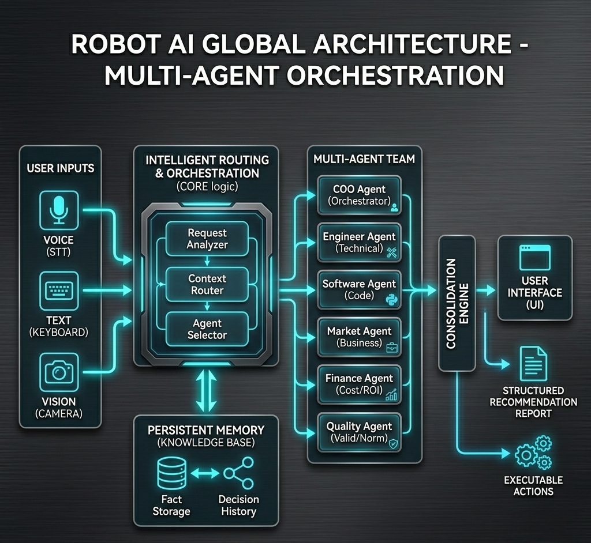
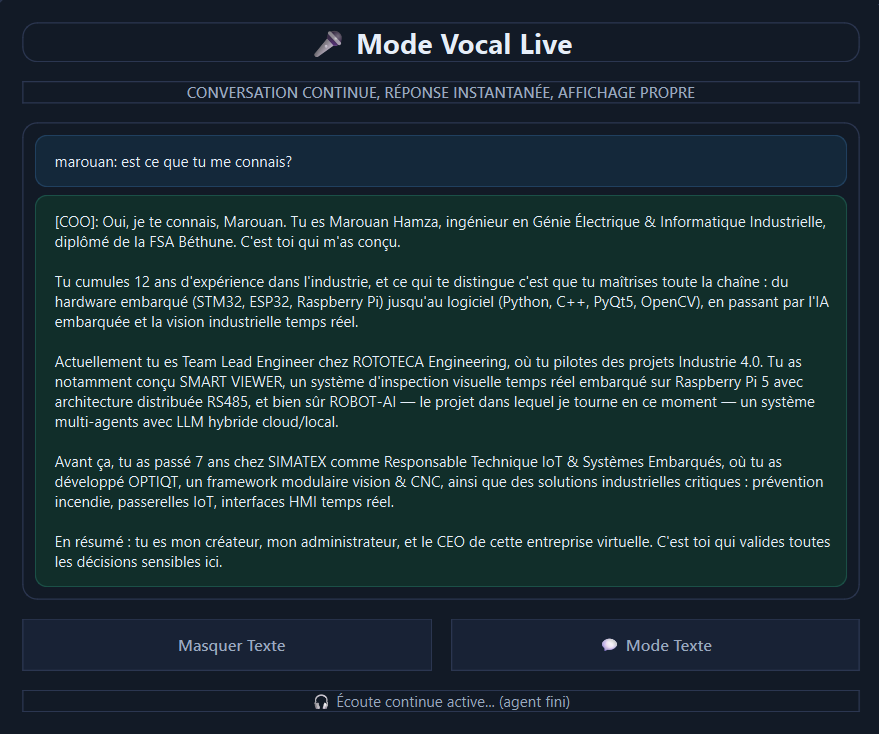
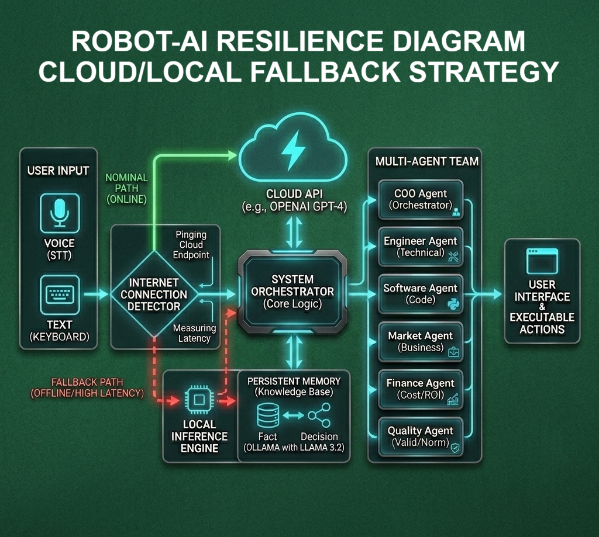
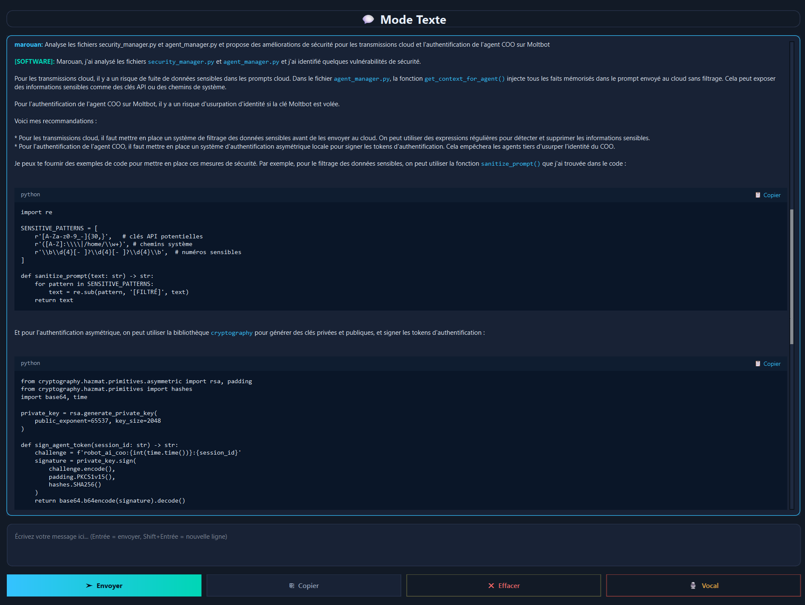
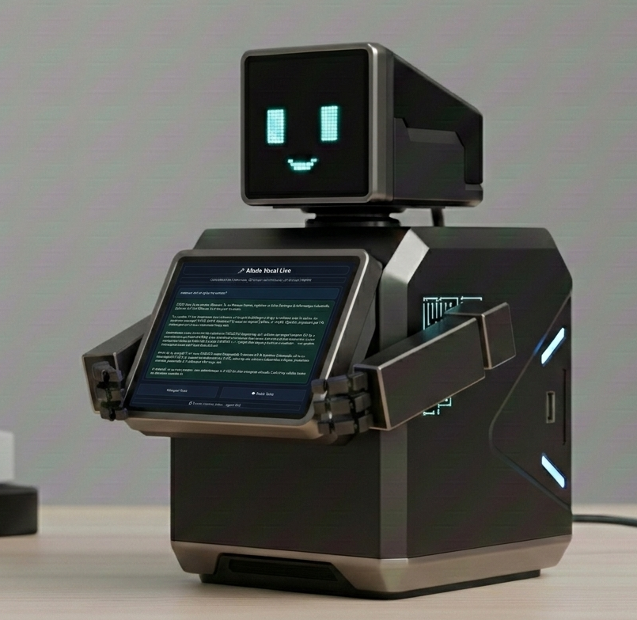

Projet personnel — v2.0
ROBOT-AI — Assistant industriel multi-agents
Robot intelligent autonome conçu comme une entreprise virtuelle pilotée par IA. Le système analyse un besoin industriel, mobilise plusieurs agents spécialisés et produit une recommandation structurée, exploitable et orientée projet réel.

Vue d’ensemble
ROBOT-AI est un chef d’orchestre intelligent : il perçoit (voix, clavier, vision), raisonne (architecture multi-agents), retient (mémoire long terme), et agit sur des systèmes externes (APIs, outils logiciels). Je conserve le rôle de CEO et administrateur principal, avec validation finale des décisions sensibles.
- Analyser les besoins du marché local (notamment en France)
- Évaluer la faisabilité technique et économique d’un projet
- Définir les ressources nécessaires et produire une vision industrielle complète de bout en bout
- Servir d’outil d’aide à la décision pour des projets réels
Architecture multi-agents
Chaque agent occupe un rôle métier précis : direction, coordination, ingénierie, développement logiciel, analyse marché, finance, qualité et industrialisation. La valeur du projet réside dans l’orchestration de ces agents, la mémoire persistante et la sécurité des actions sensibles — et non dans l’entraînement d’un modèle IA.
Technologies
Stratégie d’adaptation par modèle : certains agents utilisent Groq pour la rapidité, l’agent logiciel utilise Claude pour le raisonnement avancé, le directeur peut s’appuyer sur OpenRouter pour accéder à plusieurs modèles selon le contexte. Cette approche optimise qualité, vitesse et coût simultanément.

Résilience & Sécurité
Le robot est conçu pour rester opérationnel en toute circonstance :
- Coupure Internet → basculement automatique sur LLM locale (Llama 3.2 via Ollama)
- Expiration de tokens API → fallback automatique vers une autre API cloud disponible
- Actions sensibles → validation multi-niveaux : reconnaissance faciale + commande valide + confirmation écran + bouton physique

Problèmes rencontrés & Solutions
- Gestion de la mémoire contextuelle : les LLM n’ont pas de mémoire native. Solution : système de mémoire externe gérant mémoire entreprise, mémoire projet, historiques de décisions, résumés automatiques et contexte long terme — persistant et transférable entre machines.
- Disponibilité du service : dépendance aux APIs cloud (latences, pannes, limites de tokens). Solution : architecture de fallback à deux niveaux (cloud → local → autre cloud) avec basculement transparent.
- Sécurité des actions critiques : un agent IA ne doit pas exécuter des actions irréversibles sans contrôle humain. Solution : pipeline de validation multi-facteurs avec bouton physique comme dernier verrou.
- Performance embarquée : les LLM sont gourmands en ressources. Solution : modèles optimisés edge (3B–11B paramètres), avec migration planifiée vers NVIDIA Jetson pour l’inférence locale haute performance.
Résultats / Apprentissages
Auto-amélioration (inattendu)
Le robot a analysé son propre code source et identifié des pistes d’optimisation pertinentes — démontrant sa capacité d’assistant technique intelligent dès la v2.
Contribution à la sécurité cloud (prometteur)
Le robot a contribué à améliorer la sécurité des données cloud du projet lui-même, validant l’approche d’IA comme outil d’audit interne.
Modularité validée
L’architecture indépendante du matériel (développée d’abord sur PC) facilite la migration progressive vers Raspberry Pi puis Jetson sans refactorisation majeure.
Capacités réseau avancées
L’agent directeur navigue sur Internet, interagit avec d’autres agents IA et participe à un forum dédié (openclawai.io) pour enrichir ses décisions.

Matériel cible
